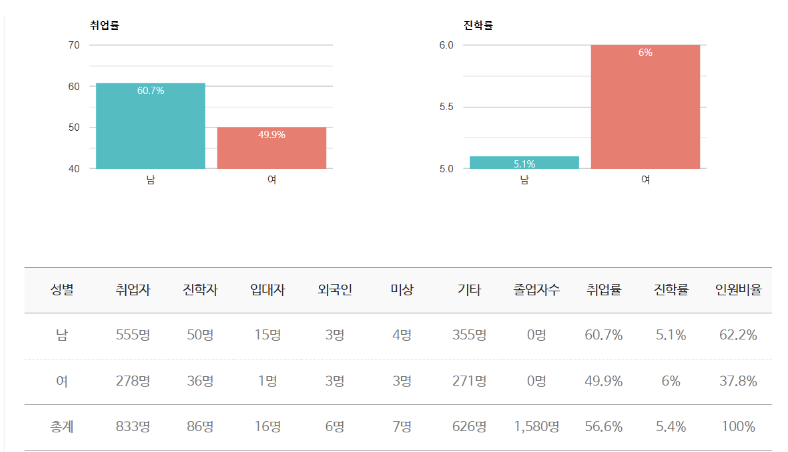
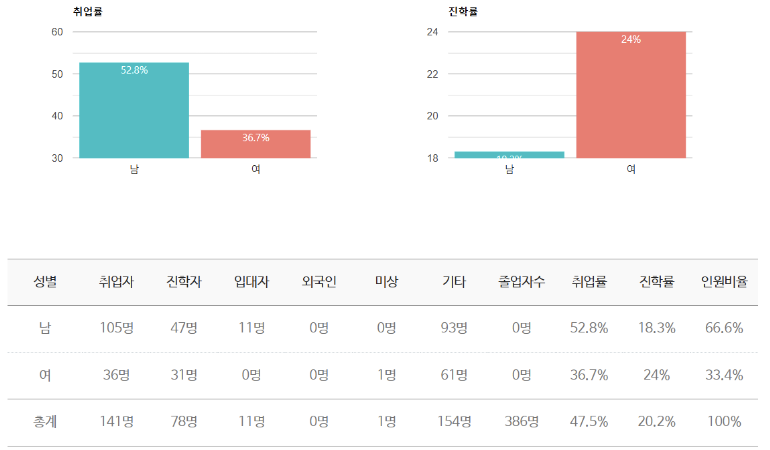

“Seize the day, God's way"
전공: 경영학 전공, 경제학 전공
한동대학교 경영학 전공은 조직의 효율성을 높이고 구성원의 삶을 풍요롭게 하는 경영 지식을 탐구합니다. 재무회계, 마케팅, 경영정보시스템 등 다양한 분야를 배우며, 신앙과 경영을 통합한 관점을 강조합니다. 실무 중심의 교육으로 프레젠테이션, 팀 활동 등을 통해 실질적 문제 해결 능력과 의사소통 역량을 기릅니다. 학생들은 글로벌 리더로 성장할 수 있는 전문성과 신앙적 가치를 함께 배웁니다. 이는 이론과 실무를 겸비한 융합형 경영 교육을 제공합니다.
경영 45전공 : 비전과 진로 설계1, 캡스톤 디자인
경영 33전공 : 비전과 진로 설계1
ACTs
본 학회 ACTs는 회계사(CPA)시험 준비반으로 한국회계사 시험 준비와 미국회계사 시험 준비를 돕는 교내 유일의 학회입니다. 정보공유와 합격생의 네트워킹을 도모하여 향후 회계 재무 금융 분야 진출에 도움을 줍니다.
Colorz
Colorz는 '미래 크리스천 마케팅 리더들의 모임'(Future Christian Marketing Leader's Network)이며, Christian, Marketing, Network 세 가지를 비전으로 삼는 평생 동역자의 모임입니다.
IMC
한동대학 유일 ERP와 BI를 주제로 공부하는 경영, 전산학회 IMC(IT Management Consulting)입니다. 본 학회는 IT기술을 비즈니스 프로세스에 접목시키고 급변하 는 IT 트렌드를 파악하는 것을 목표로 삼고 있습니다.
NFGS
NFGS (Nehemiah Finance for Good Society) 는 Finance, Accounting 지식을 배 우고 배운 지식을 바탕으로 적용하고 응용하는 한동재무학회입니다.재무에 대한 전반적 지식 뿐만 아니라, 여러가지 valuation case와 study material을 통해서 재무제표를 분석하고, 실제 기업재무에 적용해보고 있습니다.
DIVE
다이브는 'Data In Value'의 약자로, 경영과 빅데이터를 융합하여 공부하는 학회입니다. 프로그래밍, 머신러닝 알고리즘 등을 통해 데이터 관련 필수 역량을 기르고 있고 실전 프로젝트를 통해 여러 경로를 실전으로 경험하고 포트폴리오를 만들고 있습니다.
Me'Card (Management and Economics' Career Research and Development)
&GIVE(Global Impact with Vision and Expertise)
공기업/정부기관
한국전력공사, 대한무역투자진흥공사(KOTRA), 한국정책금융공 사, 중소기업진흥공단, 인천항만공사, 한국도시철도공사, 정부청사 관리행정, 한국은행, 한 국수출입은행 등
일반기업
삼성전자, 삼성SDS, 삼성카드, 삼성물산, 현대자동차, 기아자동차, NHN(네 이버), 대우인터내셔널, LG전자, LG화학, POSCO, KT, 한화, 한국타이어, 삼일회계법인, 삼정회계법인, HTNS관세법인, 현대세무회계컨설팅, 21세기특허법률사무소, 한국갤럽조사 연구소, Lee&Kent Law Office, 한국오라클, 안철수연구소, 대양상선, 금호석유화학, 현대 중공업, 금호화학, AC Nilson, 마이크로소프트 등
금융기관
신한은행, 하나은행, 중소기업은행, 국민은행, 우리은행, 대구은행, 경남은행, 농협중앙회, 동아시아경제연구원, 신용보증기금, 롯데캐피탈, 삼성카드, 신한맥쿼리금융자 문, 한국투자신탁운용, 글로벌아시안인베스트먼트, 브이아이피투자자문, 삼성증권, SK증 권, 대우증권, 미래에셋증권, 현대증권, 한화증권 등
무역/유통
롯데쇼핑, GS리테일, 신세계, 씨제이오쇼핑, 이마트, 하이마트, 현대백화점, 홈플러스테스코, FOREVER21, 그루폰코리아, 씨제이올리브영, 대양상선, 현대로지엠, 이랜 드 등
광고
제일기획, 나스미디어, 키스톤마케팅컴퍼니, Zenith Optimedia, 매케인에릭슨, 매크로메트릭스, 원더맨인터내셔널, 유니원커뮤니케이션즈 등
국내 대학원
KDI 국제정책대학원, 한동국제법률대학원, 서울대학교 일반대학원, 서 울대학교 보건대학원, 고려대학교 일반대학원, 고려대학교 교육대학원, 연세대학교 의과 학대학원, 연세대학교 일반대학원 등
해외 대학원
Washington University MBA, Purdue University MBA, Columbia University, Pittsburgh University, Wisconsin University, Carnegie Mellon 등
한동대학교 경제학 전공은 제한된 자원 속에서 사람들이 어떻게 선택하고 그 결과가 무엇인지 탐구하는 학문입니다. 분석적, 논리적, 수리적 사고를 바탕으로 사회현상을 이해하고 해결할 수 있는 능력을 기릅니다. 단순히 합리적인 선택에 그치지 않고, 따뜻한 심장을 바탕으로 윤리적이고 올바른 선택을 추구하는 경제학을 배우는 것이 특징입니다. 학생들은 이론적 깊이와 더불어 실제 문제에 적용 가능한 실질적 역량을 함께 배양합니다. 신앙과 학문을 통합하여 세상을 바꾸는 경제학적 리더를 양성하는 데 중점을 둡니다.
경제 45전공
미시경제학
거시경제학
경제수학
경영경제통계
계량경제학
정치경제학회
폭넓은 경제 이슈에 대해 함께 고민하는 학회입니다. 공기업 취업, 대학원 진학 등 다양한 진로를 계획하고 있는 학생들이 모여 있으며, 진로가 명확치 않더라도 소모임, 스터디, 공모전, 세미나 등의 학회 활동을 통해 본인의 진로를 찾아갈 수 있습니다.
금융경제연구학회
금융과 거시경제 전반에 관심이 있는 학생들이 공부하고 있는 학회입니다. 각종 금융이슈 및 정책을 거시경제 논리거시경제학 스터디와 한국은행 및 각종 금융기관 보고서를 참고하여 연구를 진행합니다.
공기업/ 정부기관
한국은행, 한국수출입은행, 한국정책금융공사, 대한무역투자진흥공사(KOTRA), 한국국제 협력단(KOICA), 한국무역보험공사, 한국산업인력공단, SH공사, 공무원연금관리공단, 녹 색성장연구소, 동아시아경제연구원, 서울문화재단, 중소기업진흥공단, 한국광물자원공사, 한국도시철도공사, 한국수력원자력, 한국장애인고용공단, 한국장학재단, 공무원 등
일반기업
하베스터스, 삼성전자, LG전자, 기아자동차, 현대모비스, 현대자동차, 포스코, 이랜드, 삼성 에버랜드, 케이티, SK텔레콤, LG화학, JYP엔터테인먼트, 씨제이이앤엠, 유니타스브랜드, 한화, 금호석유화학 등
금융권
국민은행, 우리은행, 신한은행, 중소기업은행, 농협중앙회, 대구은행, 브이아이피투자자문, 글로벌아시안인베스트먼트, 삼성카드, 서울보증보험, 신한맥쿼리금융자문, 한국투자신탁 운용 등
NGO
기아대책, 좋은씨앗, 월드비전, 초록우산 어린이재단 등
국내 대학원
KDI 국제정책대학원, 서울대학교 경제대학원, 연세대학교 경제대학원, 고려대학교 경제대학원, 한동국제법률대학원, 경희대학교 법학전문대학원, 전남대학교 법학전문대학원 등
해외 대학원
Washington University, University of Westminster, LeTourneau University 등
경영
경제
